Desde 1987História, presença e confiança local.
Colégio Perini · Carapicuíba · Desde 1987
Aprender.Pertencer.Transformar.
Uma escola que une tradição, Sistema COC, acompanhamento próximo e experiências reais para desenvolver cada aluno com segurança, autonomia e propósito.
Do Ensino Fundamental ao Ensino Médio, com método, vínculo e formação humana.
Da base ao Ensino MédioJornada escolar acompanhada de perto.
Sistema COCMaterial, plataforma e avaliações.
Projetos reaisCiência, cultura e mundo real.
Nossa essência
O Perini ensina com método, acompanha de perto e valoriza o vínculo entre aluno, família e escola.
Aprendizagem, pertencimento e formação humana caminham juntos. A rotina escolar é organizada para que o estudante desenvolva conhecimento, autonomia e responsabilidade.
Aprender
Material estruturado, professores próximos e rotina de estudo acompanhada.
Pertencer
Ambiente acolhedor, diálogo com a família e olhar atento para cada estudante.
Transformar
Projetos reais que desenvolvem repertório, colaboração, autoria e cidadania.
Etapas de ensino
Cada etapa tem um objetivo. A jornada é uma só.
Do 1º ano do Ensino Fundamental à 3ª série do Ensino Médio, o Perini acompanha o amadurecimento do estudante com método, vínculo, Sistema COC e presença pedagógica. A cada fase, mudam os desafios — e também a forma de orientar, desenvolver autonomia e preparar o próximo passo.
Base → Autonomia → Preparação
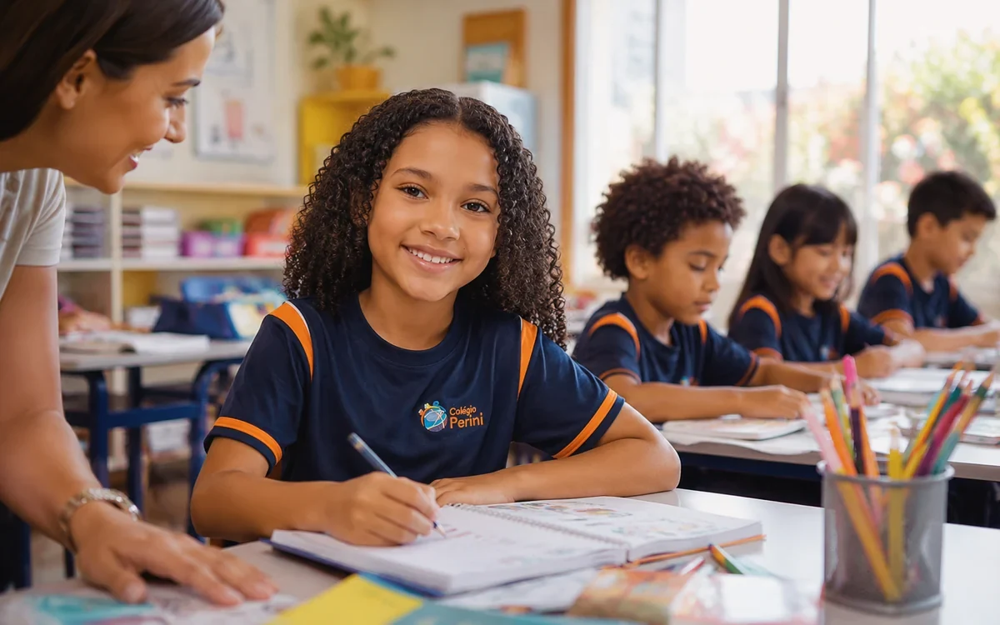
Ensino Fundamental — Anos Iniciais
1º ao 5º ano
Base para aprender com segurança.
Nos Anos Iniciais, a criança constrói fundamentos que sustentam toda a vida escolar: leitura, escrita, raciocínio lógico, interpretação, convivência, rotina e confiança para aprender.
LeituraEscritaRotina
Leitura · Escrita · Raciocínio lógico · Oralidade · Hábitos de estudo
Adaptação, participação, avanços, dificuldades e construção da rotina escolar.
Material didático por etapa, recursos digitais e atividades estruturadas para organizar a aprendizagem.
Aqui, a criança não apenas aprende conteúdos.Ela aprende a se organizar, participar e confiar no próprio processo de aprendizagem.
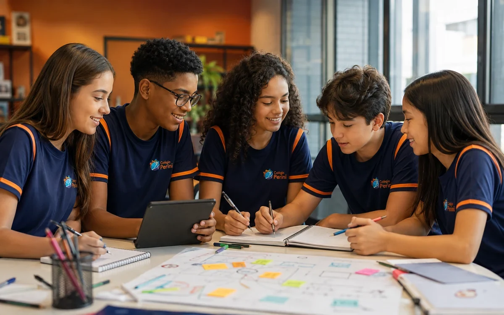
Ensino Fundamental — Anos Finais
6º ao 9º ano
Autonomia para crescer com acompanhamento.
Nos Anos Finais, o estudante assume novas responsabilidades, convive com mais disciplinas e amplia sua participação em projetos, pesquisas e atividades que exigem organização e pensamento crítico.
PesquisaResponsabilidadeRepertório
Autonomia · Organização · Pesquisa · Argumentação · Repertório
Transição de etapa, rotina de estudos, convivência, desempenho e preparação para o Ensino Médio.
Conteúdos estruturados por área, recursos digitais, avaliações e instrumentos para acompanhar evolução.
É a fase em que o aluno deixa de apenas cumprir tarefas.Ele começa a entender melhor como estudar, participar e assumir responsabilidades.
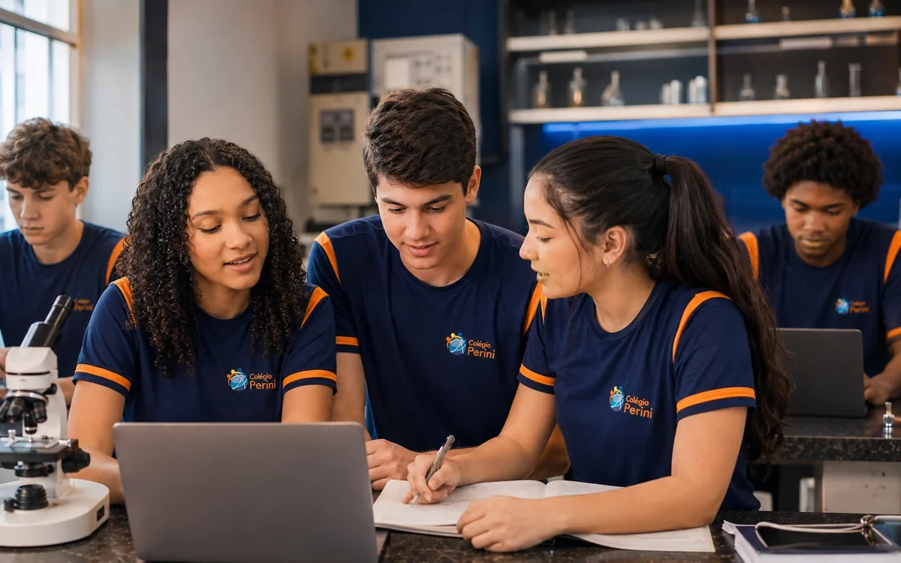
Ensino Médio
1ª à 3ª série
Preparação desde a 1ª série do Ensino Médio.
No Ensino Médio, a preparação é progressiva. Desde a 1ª série, o aluno consolida base acadêmica, cria rotina de estudo e se aproxima de avaliações, simulados e estratégias para ENEM, vestibulares e escolhas de futuro.
SimuladosEstratégiaFuturo
Base acadêmica · Estratégia de estudo · Autonomia · Simulados · Projeto de futuro
Desempenho, organização da rotina, amadurecimento acadêmico e escolhas do estudante.
Material didático, avaliações, simulados e recursos digitais para estruturar a preparação.
O Ensino Médio precisa preparar para provas, mas também para decisões.Por isso, método, acompanhamento e autonomia caminham juntos.
Sistema COC
Sistema COC com material didático, plataforma e avaliação diagnóstica.
No Colégio Perini, o Sistema COC apoia a rotina escolar com material didático estruturado, recursos digitais, avaliações e simulados que ajudam professores, alunos e famílias a acompanhar a evolução da aprendizagem.
O COC organiza a jornada acadêmica. O Perini acompanha o aluno de perto.
Projetos e vivências
A escola acontecendo de verdade.
Projetos, saídas pedagógicas, atividades culturais, ciência e convivência mostram como o aluno aprende para além da sala de aula.
Aqui, a vivência não entra como enfeite: ela mostra pesquisa, autoria, convivência e repertório em ação.
PesquisaOralidadeInvestigaçãoAutoriaColaboraçãoCidadania
Vivências que viram repertório.
Cada imagem mostra uma experiência com função pedagógica: pesquisar, apresentar, investigar, conviver, criar ou observar o mundo real.
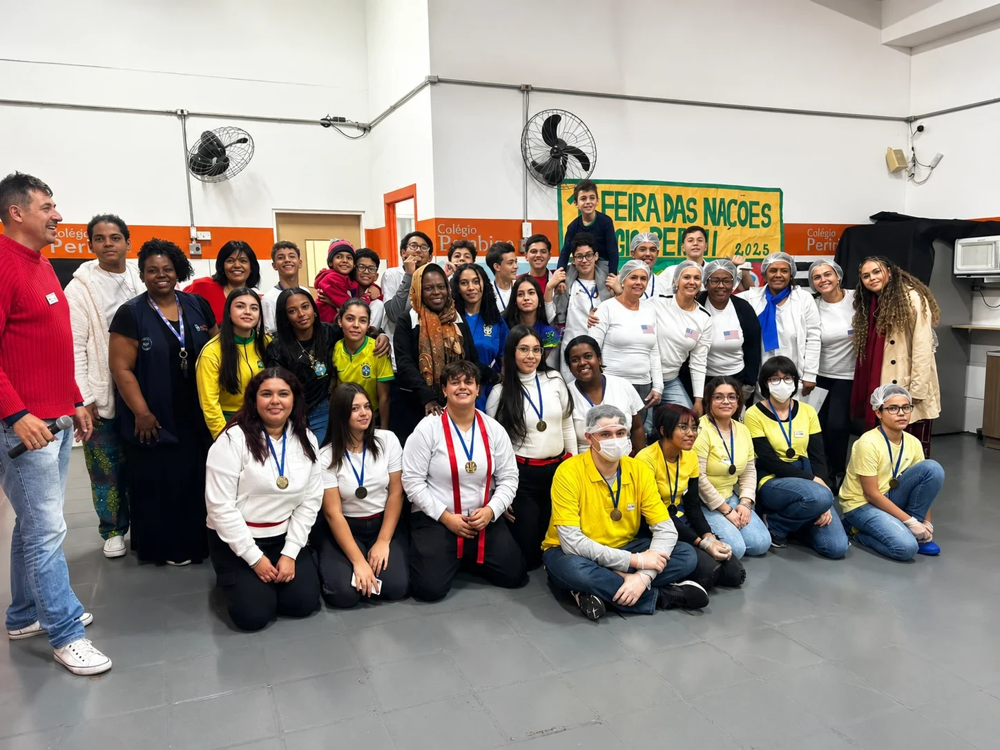
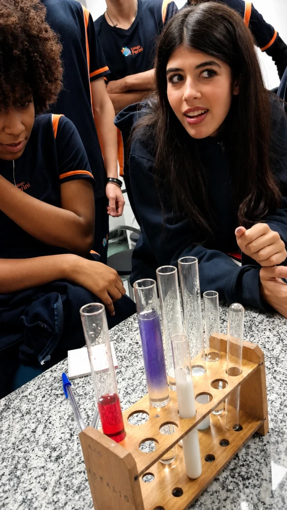
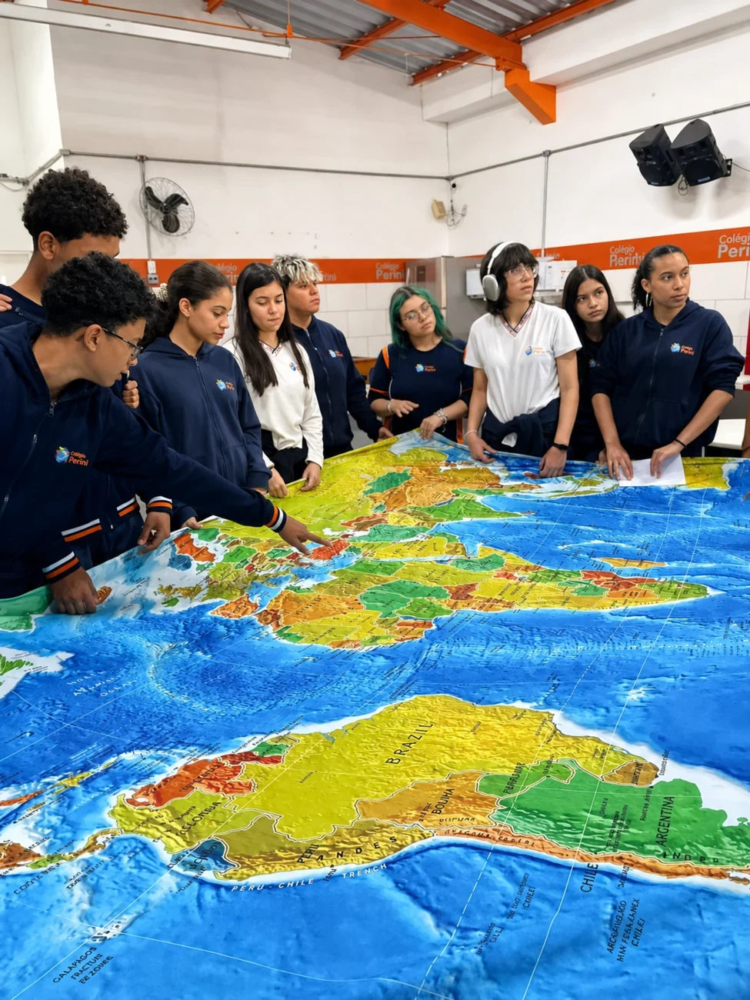
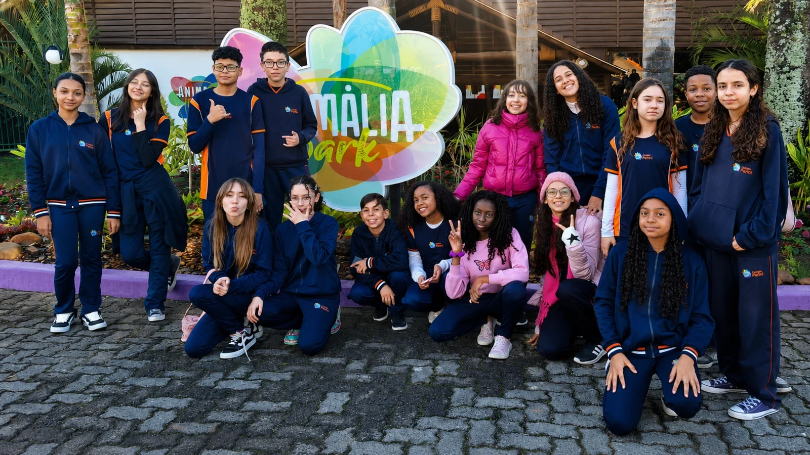
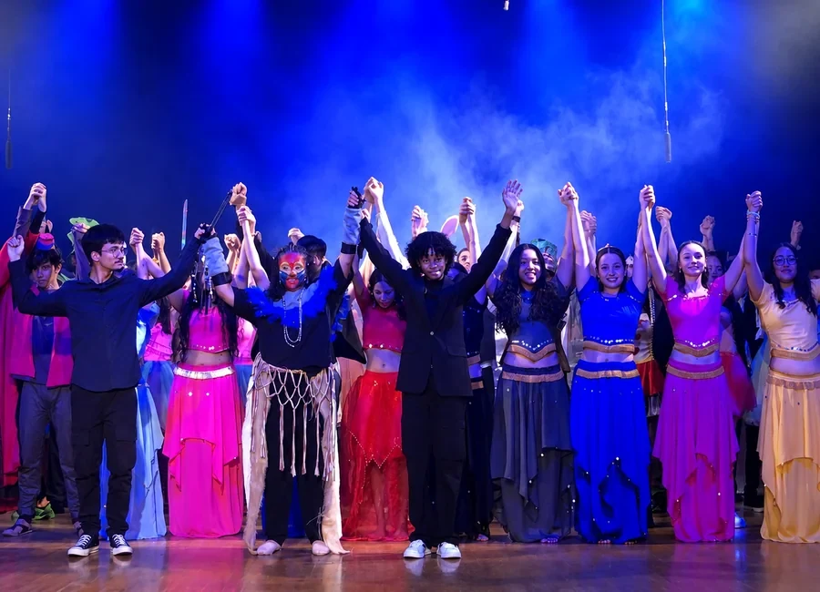
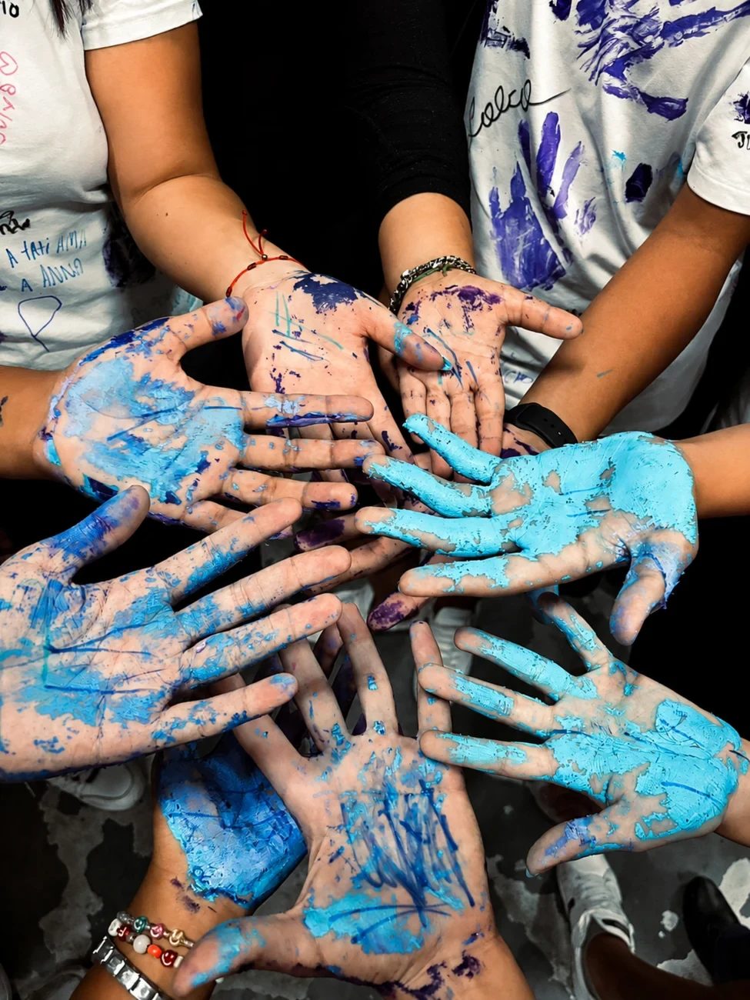
Ensino Médio
1ª e 2ª séries
3ª série do Ensino Médio
Preparação desde a 1ª série do Ensino Médio.
Desde a 1ª série do Ensino Médio, o aluno constrói base, autonomia, rotina de estudo e estratégias para avançar com segurança até os vestibulares e o ENEM.
Construção de base
Conteúdos do Ensino Médio, autonomia, avaliações, primeiros contatos com simulados no formato ENEM e organização da rotina de estudos.
Revisão e aprofundamento
Revisão dos conteúdos, resolução de questões, simulados conforme calendário pedagógico e aperfeiçoamento de estratégias de prova.
Simulados COC e ENEM conforme calendário pedagógico.
Agende uma visita
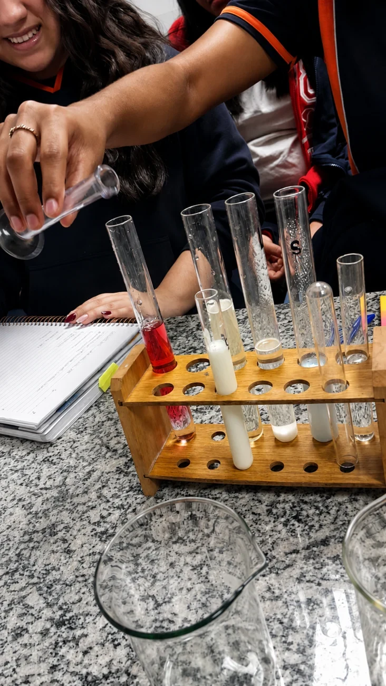
Direção e equipe
Coordenação próximaRotina acompanhada com cuidado.
Diálogo com famíliasParceria para orientar cada etapa.
Olhar atentoCada estudante é acompanhado em sua jornada.
Direção presente e equipe próxima.
A presença da equipe no cotidiano escolar ajuda a manter diálogo, organização e acompanhamento em cada etapa.
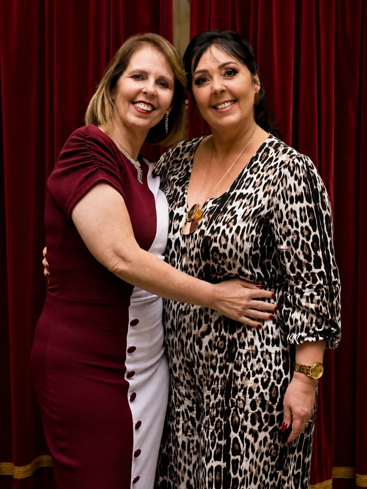
Estrutura e vida escolar
Ambientes e vivências reais para aprender, conviver e crescer.
A estrutura da escola aparece na rotina: atendimento, salas, convivência, projetos, atividades e experiências que ajudam o aluno a pertencer.
- Fachada e atendimento
- Rotina escolar
- Projetos culturais
- Convivência
- Trabalho de campo
- Saídas pedagógicas
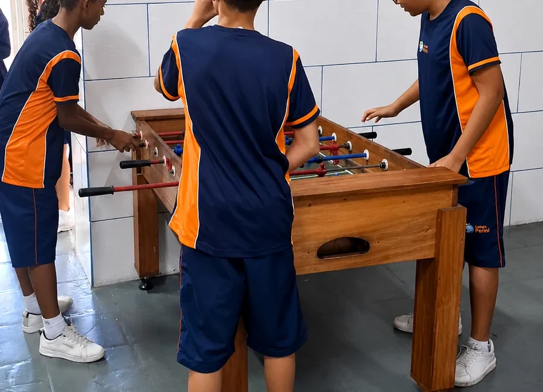
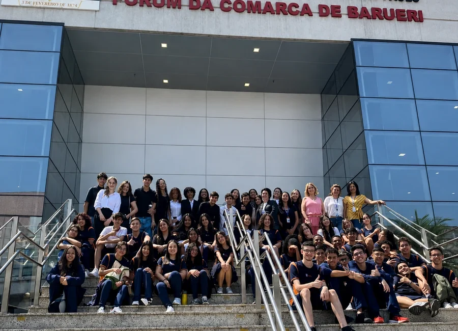
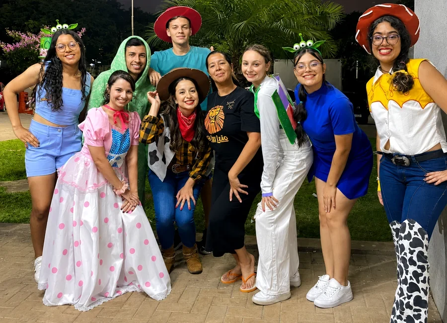
Família + escola
Agende uma visita
Família e escola no mesmo caminho.
Acompanhamento próximo, diálogo e parceria fortalecem o desenvolvimento de cada aluno. A melhor escolha acontece quando a família conhece a rotina e entende como a escola acompanha cada etapa.
A visita presencial ajuda a família a sentir o ambiente, conhecer a equipe e entender a rotina escolar de perto.
Contato
Venha conhecer o Perini de perto.
Agende uma visita, converse com nossa equipe e veja como o Perini acompanha cada etapa da vida escolar.
EndereçoR. Adão Gonçalves da Costa, 127
Jardim Jussara — Carapicuíba/SP — 06321-040
Jardim Jussara — Carapicuíba/SP — 06321-040
WhatsApp(11) 98366-8260
Telefone(11) 4164-5073
E-mailescolabambino@gmail.com
Colégio Perini no mapa
R. Adão Gonçalves da Costa, 127Jardim Jussara · Carapicuíba/SP Abrir rota no Google Maps